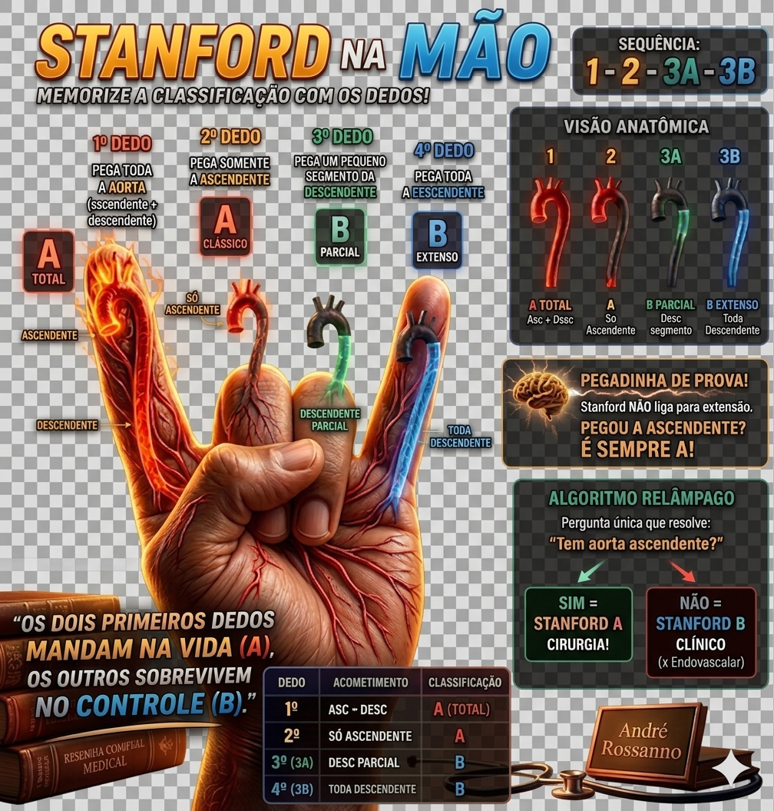
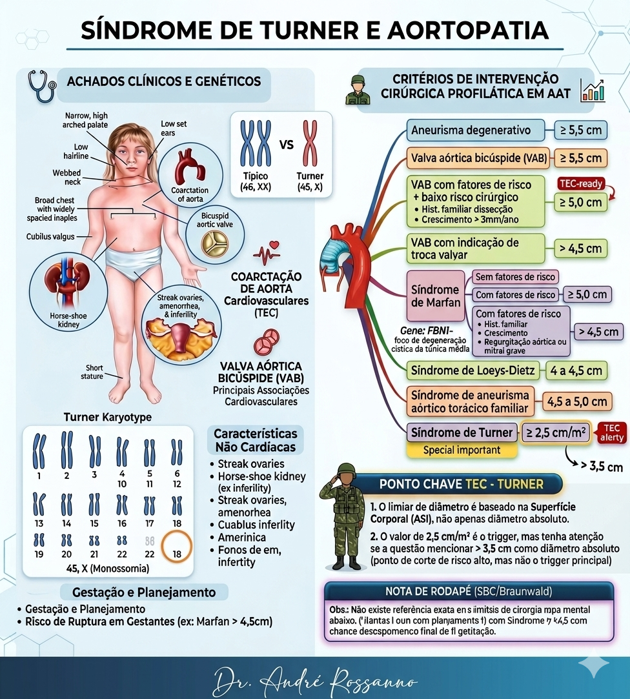

Dissecção (Stanford) + Intervenção no aneurisma em uma mesma tela

Pergunta que decide tudo:
Envolve a aorta ascendente?
Pergunta 1:
Tem síndrome genética?
Qual síndrome?
1. Stanford não liga para extensão. Liga para a ascendente.
2. Turner não usa só cm absoluto. Usa cm/m².
3. Loeys-Dietz opera mais cedo que Marfan.
4. Valva bicúspide muda o corte se houver fator de risco.
Imagine um corredor da aorta com duas portas:
🚪 Porta 1 = Dissecção → pergunta: pegou ascendente?
🚪 Porta 2 = Aneurisma → pergunta: qual o contexto e qual o corte?
No fundo do corredor há uma escada numérica: 5,5 → 5,0 → 4,5 → 4,0 → 2,5
Clique no tema da figura para testar sua memória.
